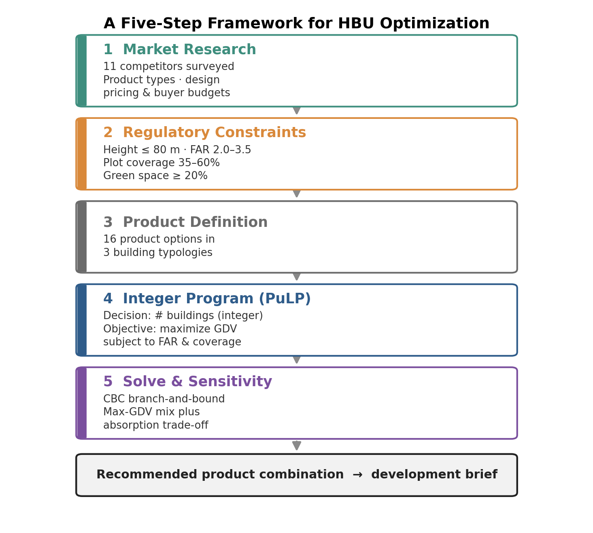
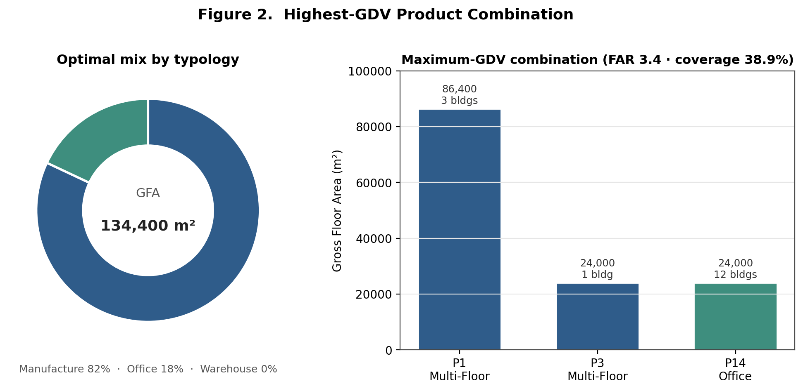
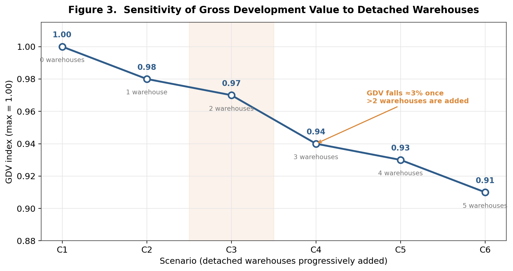
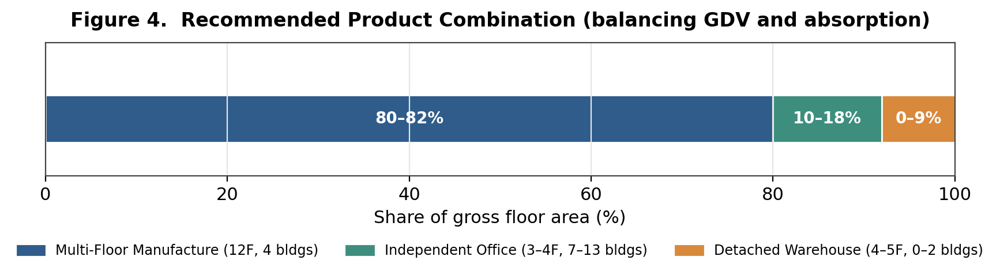

Operationalizing Highest and Best Use
Operationalizing Highest and Best Use
Abstract
Highest and Best Use (HBU) is a foundational idea in land economics and real-estate appraisal, yet in practice it is usually resolved through expert judgment rather than explicit computation. This brief reframes a product-mix decision for a Chinese business park as a constrained optimization problem structured by the logic of the four classical HBU tests. Legal permissibility and physical possibility enter as constraints, while the maximally productive use is approximated by maximizing Gross Development Value (GDV); a complete financial-feasibility test that nets out construction cost, financing, phasing, and discounting lies beyond this single-objective formulation and is flagged as future work. Solved as an integer linear program (ILP) over sixteen predefined building products and the binding zoning parameters of the site, the model maximizes GDV subject to floor area ratio (FAR) and plot-coverage limits. The optimum favors multi-floor manufacturing buildings combined with independent offices and excludes detached warehouses entirely. A sensitivity analysis then quantifies the GDV penalty of reintroducing warehouses for liquidity reasons, surfacing the trade-off between value maximization and market absorption that pure optimization tends to obscure. The study illustrates how operations research can make early-stage product-positioning analysis more transparent, reproducible, and fast.
1. Introduction and Research Problem
Product design is one of the earliest and most consequential decisions in property development. During the concept and feasibility stage, a developer must decide what to build before committing capital: whether a business park should contain multi-story manufacturing facilities, individual office units, detached warehouses, or some mixture, and in what proportions. A misalignment between the product program and underlying demand can depress sales and leasing performance and, in the worst case, compromise the viability of the entire scheme. Because these choices are made under uncertainty and are difficult to reverse once construction begins, they carry disproportionate risk relative to the effort usually devoted to them.
Conventional practice resolves the product-mix question through market positioning workshops, comparable-project benchmarking, and the professional intuition of appraisers and development managers. These methods are valuable but they are also opaque, hard to reproduce, and slow to explore the combinatorially large space of feasible building programs. The research question motivating this brief is therefore methodological: can the determination of a business park’s Highest and Best Use be formalized as a transparent optimization problem whose assumptions are explicit and whose solution can be recomputed in seconds as inputs change?
The study answers this question by translating a real product-positioning problem into an integer linear program. It was initiated and led as an internal research effort at Ping An Group for a site in the Nanhai District of Foshan. The contribution is not a new optimization algorithm but a demonstration that a familiar planning and appraisal concept can be operationalized with standard, open-source computational tools, producing decision support that is faster, auditable, and easier to subject to scenario analysis than judgment alone.
2. Conceptual Framework: HBU and Land-Use Optimization
Highest and Best Use is defined in appraisal theory as the reasonably probable use of land that is legally permissible, physically possible, financially feasible, and maximally productive, with the four tests applied in sequence so that only legally and physically admissible uses are evaluated for financial outcome (Ratcliff, 1949; Appraisal Institute, 2020). The concept is the practical counterpart of the bid-rent logic in urban land economics, in which competition allocates each parcel to the use able to extract the greatest residual value from it (Alonso, 1964; Brueckner, 2011). HBU thus already contains the structure of a constrained optimization problem: maximize productivity over the set of admissible uses.
The planning literature has long recognized this affinity. Linear and integer programming were applied to residential land allocation as early as the Penn-Jersey work of Herbert and Stevens (1960), and mathematical programming has since become a standard instrument for facility location, land-use allocation, and capital budgeting. What distinguishes the present application is its granularity. Rather than allocating land among broad use categories, the model selects integer quantities of specific, design-ready building products, so that the output is directly legible to architects and feasibility analysts. In this framing, the legal-permissibility and physical-possibility tests become the model’s constraints, while the maximally productive use is approximated by a Gross Development Value objective. This is a deliberate simplification: GDV captures the revenue side of the financial-feasibility test but not construction cost, financing, phasing, or discounting, so the model operationalizes the structure of HBU rather than delivering a complete financial-feasibility appraisal. The discrete nature of buildings makes integer programming, rather than continuous linear programming, the appropriate formal tool (Dantzig, 1963; Land and Doig, 1960).
3. Study Context and Data
The subject parcel, located in Nanhai District, Foshan, is zoned for small-scale manufacturing and research-and-development office use and spans roughly 39,000 square meters. An on-site survey of eleven competing industrial campuses and business parks in the surrounding submarket was conducted to characterize demand along three dimensions: the product types on offer and their relative popularity; their architectural attributes, including floor count, unit areas, ceiling heights, column spacing, and supporting facilities; and per-unit pricing relative to typical buyer budgets.
The survey produced several findings that directly shaped the model inputs. Independent office buildings and detached manufacturing warehouses were the most sought-after typologies, while budget-constrained buyers treated multi-story manufacturing space as a viable substitute. Most buyer budgets fell within approximately ten million RMB, or about 1.4 million USD. Preferred unit sizes clustered between 1,000 and 1,200 square meters for multi-story manufacturing space, 600 to 1,000 square meters for detached warehouses, and around 300 square meters for independent offices. These observations were used to predefine sixteen candidate building products grouped into three typologies: six multi-floor manufacturing products, seven detached warehouses, and three independent offices. Table 1 reproduces a representative portion of the product catalogue.
Table 1. Representative product options.
| Product | Building type | Floors | Unit / base area (m²) | Price, 1st floor (RMB/m²) | Price, upper floors (RMB/m²) | Price, whole building (RMB/m²) |
|---|---|---|---|---|---|---|
| P1 | Multi-Floor Manufacture | 12 | 1,200 | 11,000 | 5,500 | — |
| P2 | Multi-Floor Manufacture | 10 | 1,200 | 11,000 | 5,500 | — |
| P3 | Multi-Floor Manufacture | 12 | 1,000 | 11,000 | 5,500 | — |
| P7 | Detached Warehouse | 12 | 1,200 | — | — | 6,700 |
| P8 | Detached Warehouse | 10 | 1,200 | — | — | 6,700 |
| P9 | Detached Warehouse | 12 | 1,000 | — | — | 7,000 |
| P14 | Independent Office | 4 | 250 | — | — | 11,000 |
| P15 | Independent Office | 3 | 300 | — | — | 11,000 |
| P16 | Independent Office | 3 | 250 | — | — | 11,000 |
Pricing reflects an important market regularity. Multi-floor manufacturing space commands a high ground-floor price of about 11,000 RMB per square meter but a much lower upper-floor price of about 5,500 RMB, whereas independent offices sustain a uniform premium near 11,000 RMB across floors, and detached warehouses sell at a comparatively modest whole-building rate near 6,700 to 7,000 RMB. These differences in the price structure across typologies are what ultimately drive the optimal allocation.
4. Methodology: Formulating the Product-Mix Problem as an Integer Program
The development program is represented as a vector of decision variables, one per product, each giving the integer number of buildings of that type to construct. Every product carries a fixed attribute set, including base area, gross floor area, ceiling height, building type, per-unit price, and floor count, so that selecting a quantity of a product automatically determines its contribution to value and to each regulatory ratio. Figure 1 summarizes the five-step framework, from market research through regulatory screening and product definition to optimization and recommendation.

Let \(x_i \in \mathbb{Z}_{\ge 0}\) denote the number of buildings of product \(i\), for \(i = 1, \dots, 16\). Each product has unit area \(a_i\), base (footprint) area \(b_i\), floor count \(f_i\), first-floor unit price \(p^{\,1}_i\), and upper-floor unit price \(p^{\,u}_i\). Let \(L\) be the total land area of the parcel. The model maximizes Gross Development Value, computed as the saleable value of every building selected:
\[\max_{x}\; \text{GDV} = \sum_{i=1}^{16} \Big[\, p^{\,1}_i\, a_i + (f_i - 1)\, p^{\,u}_i\, a_i \,\Big]\, \cdot 2 \cdot x_i\]
The bracketed term values one stacked unit, charging the premium ground-floor rate to the first floor and the lower rate to the remaining floors; the factor of two reflects the paired (double-unit) configuration in which these buildings are marketed. GDV here is gross saleable value, not residual land value or developer profit, so the objective proxies the maximally productive use on the revenue side only; establishing full financial feasibility would additionally require construction cost, financing, phasing, and discounting, which this formulation deliberately leaves to future extension. Two families of constraints encode the binding zoning parameters of the site:
\[0.35 \;\le\; \frac{1}{L}\sum_{i} b_i\, x_i \;\le\; 0.60 \qquad \text{(plot coverage)}\]
\[2.0 \;\le\; \frac{1}{L}\sum_{i} b_i\, f_i\, x_i \;\le\; 3.5 \qquad \text{(floor area ratio)}\]
The formulation is a pure integer linear program and is solved with PuLP, an open-source Python modeling library that passes the problem to the COIN-OR CBC branch-and-bound solver. The practical advantage over a spreadsheet solver is substantial: the ILP returns a certified optimal program in seconds, which makes it feasible to rerun the model across many regulatory and market scenarios rather than evaluating a handful of hand-built options.
5. Results
Solving the model yields a clear and economically intuitive optimum. The maximum-GDV program (Table 2, Figure 2) combines multi-floor manufacturing buildings with independent offices and contains no detached warehouses. Three P1 buildings and one P3 building supply roughly 82 percent of gross floor area, with the balance provided by twelve compact P14 office buildings. The program reaches a FAR of 3.4 and a plot coverage of 38.9 percent, sitting just inside the regulatory envelope.
Table 2. Maximum-GDV combination. GFA 134,400 m²; FAR 3.4; plot coverage 38.9%.
| Product | Type | Unit area (m²) | Floors | Buildings | GFA (m²) | Share of GFA | Relative GDV |
|---|---|---|---|---|---|---|---|
| P1 | Multi-Floor Manufacture | 1,200 | 12 | 3 | 86,400 | 64% | 0.56 |
| P3 | Multi-Floor Manufacture | 1,000 | 12 | 1 | 24,000 | 18% | 0.16 |
| P14 | Independent Office | 250 | 4 | 12 | 24,000 | 18% | 0.29 |

That detached warehouses are absent from the value-maximizing solution corroborates the market survey, which found warehouses to carry thin profit margins. The optimizer again selected only multi-floor manufacturing and office products, drove both the FAR and the plot-coverage constraints to their upper bounds, and excluded warehouses, confirming that the reported solution follows from the model logic rather than from incidental input choices.
The study deliberately reintroduces warehouses and measures the cost. Table 3 and Figure 3 report a sensitivity analysis in which detached warehouses are progressively added to the program. The GDV index declines monotonically from 1.00 to 0.91 across six scenarios, and the marginal penalty steepens once more than two warehouses are included.
Table 3. Sensitivity of the GDV index to added detached warehouses.
| Scenario | Detached warehouses added | GDV index | Change |
|---|---|---|---|
| C1 | 0 | 1.00 | — |
| C2 | 1 | 0.98 | −2% |
| C3 | 2 | 0.97 | −1% |
| C4 | 3 | 0.94 | −3% |
| C5 | 4 | 0.93 | −1% |
| C6 | 5 | 0.91 | −2% |

Reading the value surface together with the absorption evidence yields the final recommendation (Table 4, Figure 4). The program retains multi-floor manufacturing as the dominant typology at 80 to 82 percent of floor area, includes independent offices at 10 to 18 percent for their pricing premium and steady demand, and admits a small warehouse component of up to roughly 9 percent to support early sales velocity without materially eroding value.
Table 4. Recommended product combination.
| Building type | Single unit (m²) | Double unit (m²) | Floors | Buildings | Share of GFA |
|---|---|---|---|---|---|
| Multi-Floor Manufacture | 1,000–1,200 | 2,000–2,400 | 12 | 4 | 80–82% |
| Independent Office | 250–300 | 500–600 | 3–4 | 7–13 | 10–18% |
| Detached Warehouse | 600–800 | 1,200–1,600 | 4–5 | 0–2 | 0–9% |

6. Discussion: Planning Implications and Limitations
The exercise demonstrates three things of interest to planning scholarship and practice. First, it shows that the logic of HBU can be stated precisely enough to compute. Legal permissibility and physical possibility map cleanly onto constraints, and the maximally productive use onto a Gross Development Value objective; the financial-feasibility test is only partially represented, since GDV captures revenue but not cost, financing, or discounting. Making these assumptions and their boundaries visible exposes them to scrutiny and revision in a way that tacit expertise does not. Second, the regulatory parameters that planners set — the FAR band, the coverage limits, the height ceiling, and the green-space minimum — are the active constraints that shape the optimum; the model therefore doubles as a tool for examining how zoning choices translate into built outcomes. Third, the value-versus-absorption tension shows the limits of single-objective optimization: a program that maximizes GDV alone may be unattractive once liquidity and cash-flow risk are considered.
Several limitations qualify these results. The objective treats prices as fixed exogenous inputs, ignoring price elasticity. Absorption is handled as a secondary screen rather than as a formal second objective. The objective is Gross Development Value rather than residual land value or risk-adjusted profit. The model is static, optimizing a single end-state rather than a phasing sequence. Finally, the 20 percent green-space requirement is verified after the fact rather than imposed as a constraint. These caveats sketch a research agenda in which computational feasibility analysis is progressively enriched toward the full complexity of development decision-making.
7. Conclusion
This brief has reframed a concrete business-park product-mix decision as an integer linear program that operationalizes the logic of Highest and Best Use, using Gross Development Value as a transparent, if partial, proxy for the maximally productive use that underlies both land-use planning and real-estate appraisal. The model recovers an economically sensible optimum, quantifies the value cost of pursuing liquidity, and produces an auditable recommendation in seconds using open-source tools. More broadly, it illustrates a transferable template for computational decision support in planning, in which regulatory parameters enter as constraints, value enters as an objective, and scenario analysis replaces one-off judgment.
References
Alonso, W. (1964). Location and Land Use: Toward a General Theory of Land Rent. Harvard University Press.
Appraisal Institute. (2020). The Appraisal of Real Estate (15th ed.). Appraisal Institute.
Brueckner, J. K. (2011). Lectures on Urban Economics. MIT Press.
Dantzig, G. B. (1963). Linear Programming and Extensions. Princeton University Press.
Herbert, J. D., and Stevens, B. H. (1960). A model for the distribution of residential activity in urban areas. Journal of Regional Science, 2(2), 21–36.
Land, A. H., and Doig, A. G. (1960). An automatic method of solving discrete programming problems. Econometrica, 28(3), 497–520.
Mitchell, S., O’Sullivan, M., and Dunning, I. (2011). PuLP: A Linear Programming Toolkit for Python. University of Auckland.
Ratcliff, R. U. (1949). Urban Land Economics. McGraw-Hill.
Wheaton, W. C., and DiPasquale, D. (1996). Urban Economics and Real Estate Markets. Prentice Hall.